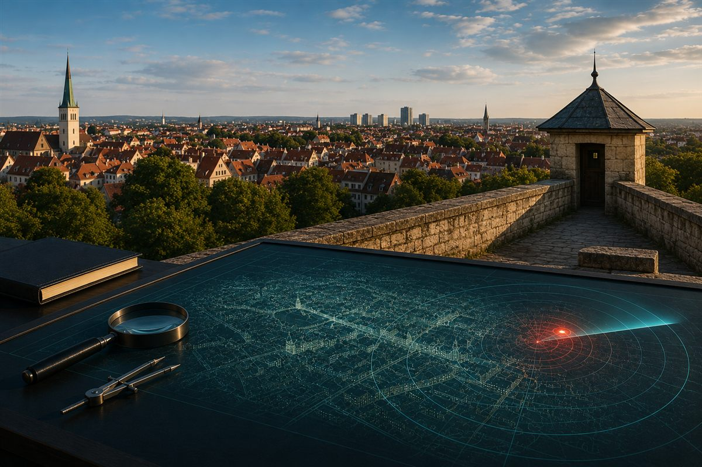

Technik-Radar
bundesweit beobachtet, für Erfurt übersetzt
haus
entscheider

Jeden Freitag, ein Blick.
Was sich bei Wärmepumpe, Schall und Kosten bewegt — kuratiert, eingeordnet, für Erfurt übersetzt.
Folgen
hausentscheider.de
· Technik-Radar
Angaben ohne Gewähr · keine Rechts- oder Anlageberatung